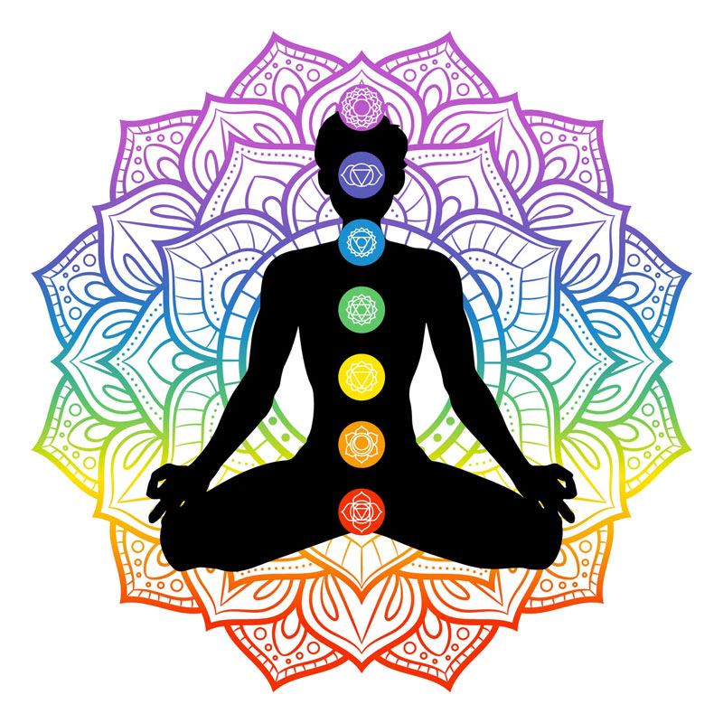

Chakras, cores e cristais
Os Chakras são centros, órgãos suprafísicos, através dos quais as energias dos diferentes campos sincronizados são distribuídas ao corpo físico. Os Chakras são vórtices como se fosse um redemoinho um ciclone em miniatura que faz circular as energias numa determinada vibração. Temos no corpo humano mais de 88.000 Chakras, porém temos uma ordem em importância, tais como as metrópoles, cidades grandes, cidades pequenas e vilas. Nesta ordem temos sete Chakras Magnos (principais), vinte e um Chakras grandes e demais se dividem em médios e pequenos. Os Chakras magnos estão situados nos plexos (rede ou interconexão de nervos, vasos sanguíneos ou vasos linfáticos). Cada um dos veículos (corpo etérico, corpo astral e corpo mental) possui Chakras. Na literatura indiana, os Chakras também são chamados de lótus pela sua forma que lembra uma flor com pétalas. Os Chakras quando em desequilíbrio podem ocasionar doenças tanto do corpo físico, como mental, emocional e espiritual. As doenças iniciam no corpo mental e emocional para depois irem para o corpo físico, quando uma doença se instala no corpo físico é porque a um bom tempo já estava acontecendo através da mente e das emoções. Uma das formas mais simples e eficazes de equilibrar os Chakras, consiste em colocar um cristal da cor apropriada sobre cada um deles. Os cristais reforçam a vibração energética de cada Chakra e, dessa forma, devolvem-lhe a sua harmonia natural. Os Chakras são baseados em sete cores, portanto, cada Chakra tem uma série de pedras ou cristais que correspondem a eles energeticamente.
1º Chakra Base
Nome sânscrito: Muladhara (base de apoio) Cor: Vermelho e preto Mantra: LAM Cristais: Turmalina negra, obsidiana, quartzo Fumê, jaspe. Elemento: Terra Função dos sentidos: Olfato Funções gerais: Suprarrenais, rins, coluna vertebral, ossos, dentes, intestino grosso, reto, próstata, útero, anemia, circulação sanguínea, tensão arterial e nervosa.
A ação do Chakra raiz vai muito além do que a sexual na qual foi fortemente ligado, sua energia se espalha por todo o corpo e ele é o responsável por todos nossos instintos básicos, nossa vontade e motivação de viver dependem de seu alinhamento. O chakra básico está ligado a nossa energia física, ele fica entre a área genital e o ânus, atuando também no cóccix. Ele está sim ligado aos prazeres sexuais, e a tudo que norteia a esse tema, mas não é somente a isso o seu papel. Como ele se inicia na base de nossa coluna, ele circula toda sua energia por nosso corpo seguindo o sangue, sendo o responsável até mesmo pelo alinhamento e nossa organização celular. Ou seja, todas nossos sentidos e funções básicas estão ligados a este Chakra, ou seja: dormir, comer, beber, aprender, e é claro, também o sexo. Quando o Chakra básico está alinhado, ele garante uma grande motivação, que impulsiona a força de ação e a coragem para qualquer assunto da vida. Ele nos fornece a energia para tomar decisões e correr atrás de tudo que almejamos, nos proporcionando muita criatividade e vontade de vencer. Ele conecta nossa energia com a do planeta por estar orientado para baixo.
Efeitos positivos quando alinhado: Vigor; Motivação para viver; Potência sexual; Coragem para superar desafios; Conexão com o mundo material; Capacidade de decisão adequada; Fácil compreendimento da realidade; Poder de concretizar planos; Habilidade e praticidade; Entendimento e conexão com nossos principais instintos; Visão realista. Efeitos negativos quando não alinhado: Desmotivação; Sonolência e apatia; Desequilíbrio da energia física e sexual; Hiperatividade; Insônia; Depressão; Desmotivação; Problemas de coluna e dores lombares; Problemas de útero e intestino. Afirmação para reequilíbrio e ativação do Chakra:
“Eu me sinto plenamente seguro e sustentado pela terra”.

2º Chakra Umbilical ou Sexual
Nome sânscrito: Svadhistana (Lugar-Morada do Ser ou o "Fundamento de si próprio"). Localização: Região do baço Mantra: Usa-se o som do suspiro profundo Cristais: Cornalina, calcita laranja, ágata marrom-alaranjada, âmbar, opala de fogo e outras nesse mesmo tom. Elemento: Todos os elementos atuam neste Chakra Cor: Laranja Glândula: Baço Plexo: Mesentérico.
O Chakra Esplênico é o principal responsável pela qualidade do nosso sangue e do equilíbrio da função do baço. Seu alinhamento é imprescindível para quem procura uma vida mais longa e saudável, através dele controlamos a qualidade da nossa energia vital que flui por nosso sangue em todo o corpo. Quando alinhado podemos notar facilmente uma melhor disposição e uma explosão de energia e vida dentro de nós, nos garantindo uma melhor forma de viver. Derivado da palavra inglesa ‘’Spleen’’, sua tradução ao português significa baço, o Esplênico é responsável pela energia de toda área sanguínea, assim como também a função do baço. Ele é o condutor da vida, por tratar exatamente da corrente sanguínea. Dentre os Chakras do corpo, este é o que influencia na nossa produção de glóbulos vermelhos e brancos, é o transmissor de vida para todos os demais órgãos do corpo. Ele também leva energias dos Chakras coronário e frontal para a purificação sanguínea. Este Chakra está ligado à energia dos adolescentes, a partir dos 14 anos a criança passa a sofrer maior influência deste Chakra e isso explica suas longas horas de sono para reposição de energias e a sua explosão de vitalidade enquanto acordado. Eles começam a desenvolver o individualismo e a tentarem a se organizar sozinhos. De todos os demais Chakras este é o que cuida exclusivamente do nosso sangue, seu equilíbrio o mantém puro e com uma distribuição adequada para todos os órgãos, ou seja, a vida flui dentro do corpo de maneira harmônica. Quando ele não está alinhado diversos problemas muito preocupantes como leucemia, podem ser desenvolvidos.
Efeitos positivos quando alinhado: Mais disposição; Maior energia vital; Bom funcionamento de todo organismo; Melhor irrigação sanguínea; Controle da pressão arterial; Maior facilidade para se expressar e socializar; Melhor energia para se curar e curar os outros. Efeitos negativos quando não alinhado: Sonolência; Falta de capacidade de expressar-se; Isolamento social; Doenças sanguíneas como anemia e leucemia; Problemas em outros órgãos decorrentes da falta de boa circulação do sangue. Afirmação para reequilíbrio e ativação do Chakra: “Eu fluo em harmonia com os ritmos da vida”.
3º Chakra Plexo Solar
Nome sânscrito: Manípura (repleto de joias) Cor: Amarelo Mantra: RAM Cristais: Topázio, pedra do sol e citrino; Elemento: Fogo; Glândulas: Fígado, baço, pâncreas, vesícula, aparelho digestivo. Funções gerais: Beneficia o aparelho digestivo e controla a vontade e o ego;
O Chakra Plexo Solar sofre a maior influência das nossas emoções e da energia que nos rodeia. Mantê-lo alinhado garante não só nosso equilíbrio emocional e uma maior autoconfiança, como também prosperidade e realizações financeiras. Também conhecido como Manípura que significa “repleto de joias”, ele se localiza dois dedos acima do umbigo e é também conhecido como Chakra Umbilical. O órgão que ele tem maior incidência é o pâncreas e todo o sistema digestivo, sua cor é amarela, podendo haver variações de verde escuro e de vermelho. Dentre os Chakras do corpo, é no plexo solar que depositamos as vibrações que provém de energias negativas como o ódio, mágoa, nervosismo e tristeza. É comum quando não estamos satisfeitos com algo ou muito decepcionados na vida, sentirmos inchaços na barriga e a ausência de força de vontade, este são alguns dos sintomas quando este ponto encontra-se desalinhado. Este Chakra é muito utilizado pelos médiuns para a materialização e contato com seres do plano espiritual, isso se deve ao fato de que é no plexo que encontramos o centro da energia mística em nosso corpo. O plexo solar é o Chakra que mais é sensível aos nossos atos e estímulos do mundo. Quando está equilibrado este Chakra possibilita um melhor envolvimento e entendimento do meio social no qual estamos inseridos, é possível captar a energia das pessoas a sua volta e perceber quem te traz reações boas ou energias negativas para sua vida. A pessoa se torna mais sensível e atenta as ameaças vindas através das vibrações naturais. Quando você de repente se sentir enojado ou mal do estômago sem motivo aparente, é o plexo solar alertando sobre energias pesadas presentes no ambiente, vinda de pessoas ou situações desagradáveis.
Efeitos positivos quando alinhado: Equilíbrio na paixão e desejo; Melhor funcionamento da digestão dos alimentos; Distribuição balanceada de energia no corpo, provindas de nutrientes; Força e energia para resolver questões; Maior felicidade; Melhor capacidade para realizar escolhas; Controle emocional; Pensamentos fluídos; Melhor aparência da pele; Poder pessoal; Satisfação; Maior amor próprio; Bons relacionamentos; Melhor planejamento financeiro. Efeitos negativos quando não alinhado: A pessoa fica suscetível a energias ruins; Falta de confiança em si mesma; Dificuldade em relações pessoais; Falta de auto estima; Falta de motivação; Problemas digestivos como gastrite e úlcera; Falta de foco; Não encontra soluções de questões da vida facilmente; Pensamentos depressivos; Problemas de fígado; Falta de controle financeiro; Estresse; Raiva, soberba; Arrogância; Pessoa facilmente influenciável e de caráter questionável; Desenvolvimento de diabetes ou hipoglicemia. Afirmação para reequilíbrio e ativação do Chakra: “Eu compartilho a dádiva de meus talentos com a teia da vida”.

4º Chakra Cardíaco
Nome sânscrito: Anahata (câmara secreta do coração) Cor: Verde Mantra: YAM Cristais: Quartzo verde, rosa e esmeralda. Elemento: Ar Glândulas: Timo Funções gerais: beneficia a imunidade, funções cardíacas e pulmões. A questão não é só obter o significado dos Chakras, mas saber como energizá-los e buscar assim harmonia e saúde para nossas vidas.
O Chakra Cardíaco é o principal responsável pela forma como nos construiremos sentimentalmente e a maneira que influenciaremos as pessoas a nossa volta com as nossas energias. Seu nome original é Anahata, oriundo do hindu, que significa a “câmara secreta do coração”. Este Chakra se encontra no centro do peito, no campo do coração como seu nome sugere, sua ligação é diretamente com a glândula Timo. Ele energiza todos os Chakras do corpo, buscando uma forma de equilibrá-los, toda a vibração do tórax e do sistema respiratório provém dele, por isso ele se torna o canalizador dos sentimentos e do amor, proporcionando assim uma aura mais equilibrada, repleta de compaixão, gratidão e generosidade. Na parte física, o sistema imunológico depende da saúde deste Chakra. Por ser o ponto central dos sete Chakras, ele é o nosso corpo astral, onde se mantém como o conector dos três Chakras inferiores que são nossa terra e dos três superiores representantes do nosso espiritual, portanto ele liga o nosso Céu e Terra, no possibilitando encontrar em nosso coração o transformador das energias terrenas para o plano espiritual. Os Chakras têm significados diferentes e recebem a influência das energias exteriores de várias maneiras, no caso do Chakra Cardíaco ele funciona como uma esponja dos sentimentos e é o mais afetado pelas cargas emocionais que vivenciamos. Quando energizado da maneira correta, a pessoa mantém uma vida leve, com amor por suas atividades e fica fortalecida perante questões afetivas, sendo assim ele transforma não somente a sua vida, mas a de todas as pessoas que convivem com você ou que recebem seus conselhos. Mas, quando influenciado com efeito contrário, seu desequilíbrio traz problemas respiratórios, cardíacos e tendências depressivas, os relacionamentos são verdadeiros desafios e a tendência a isolamento aumenta.
Efeitos positivos quando alinhado: Maior vigor devido a boa energização dos demais Chakras; Harmonia na vida material e espiritual; Amor pelas funções que exerce; Amor pela vida; Ótimo conselheiro; Espiritualidade aflorada; Vida equilibrada; Controle e harmonia nos relacionamentos; Felicidade contagiante; Confiança nas decisões; Compaixão; Capacidade de entendimento e perdão; Visão ampla sobre questões da vida. Efeitos negativos quando não alinhado: Irritação, Depressão; Transtornos de ansiedade; Palpitações; Taquicardia; Isolamento; Problemas cardíacos; Câncer de mama em mulheres; Materialismo; Dependência tanto material quanto afetiva; Inconstância afetiva; Frustrações; Relações afetivas passageiras. Afirmação para reequilíbrio e ativação do Chakra: “Eu abro o meu coração para acolher todos os seres”.

5º Chakra Laríngeo
Nome sânscrito: Anahata (câmara secreta do coração) Cor: Verde Mantra: YAM Cristais: Quartzo verde, rosa e esmeralda. Elemento: Ar Glândulas: Timo Funções gerais: beneficia a imunidade, funções cardíacas e pulmões. A questão não é só obter o significado dos Chakras, mas saber como energizá-los e buscar assim harmonia e saúde para nossas vidas.
O Chakra Cardíaco é o principal responsável pela forma como nos construiremos sentimentalmente e a maneira que influenciaremos as pessoas a nossa volta com as nossas energias. Seu nome original é Anahata, oriundo do hindu, que significa a “câmara secreta do coração”. Este Chakra se encontra no centro do peito, no campo do coração como seu nome sugere, sua ligação é diretamente com a glândula Timo. Ele energiza todos os Chakras do corpo, buscando uma forma de equilibrá-los, toda a vibração do tórax e do sistema respiratório provém dele, por isso ele se torna o canalizador dos sentimentos e do amor, proporcionando assim uma aura mais equilibrada, repleta de compaixão, gratidão e generosidade. Na parte física, o sistema imunológico depende da saúde deste Chakra. Por ser o ponto central dos sete Chakras, ele é o nosso corpo astral, onde se mantém como o conector dos três Chakras inferiores que são nossa terra e dos três superiores representantes do nosso espiritual, portanto ele liga o nosso Céu e Terra, no possibilitando encontrar em nosso coração o transformador das energias terrenas para o plano espiritual. Os Chakras têm significados diferentes e recebem a influência das energias exteriores de várias maneiras, no caso do Chakra Cardíaco ele funciona como uma esponja dos sentimentos e é o mais afetado pelas cargas emocionais que vivenciamos. Quando energizado da maneira correta, a pessoa mantém uma vida leve, com amor por suas atividades e fica fortalecida perante questões afetivas, sendo assim ele transforma não somente a sua vida, mas a de todas as pessoas que convivem com você ou que recebem seus conselhos. Mas, quando influenciado com efeito contrário, seu desequilíbrio traz problemas respiratórios, cardíacos e tendências depressivas, os relacionamentos são verdadeiros desafios e a tendência a isolamento aumenta.
Efeitos positivos quando alinhado: Maior vigor devido a boa energização dos demais Chakras; Harmonia na vida material e espiritual; Amor pelas funções que exerce; Amor pela vida; Ótimo conselheiro; Espiritualidade aflorada; Vida equilibrada; Controle e harmonia nos relacionamentos; Felicidade contagiante; Confiança nas decisões; Compaixão; Capacidade de entendimento e perdão; Visão ampla sobre questões da vida. Efeitos negativos quando não alinhado: Irritação, Depressão; Transtornos de ansiedade; Palpitações; Taquicardia; Isolamento; Problemas cardíacos; Câncer de mama em mulheres; Materialismo; Dependência tanto material quanto afetiva; Inconstância afetiva; Frustrações; Relações afetivas passageiras. Afirmação para reequilíbrio e ativação do Chakra: “Eu abro o meu coração para acolher todos os seres”.
6º Chakra Frontal
Nome sânscrito: Anahata (câmara secreta do coração) Cor: Verde Mantra: YAM Cristais: Quartzo verde, rosa e esmeralda. Elemento: Ar Glândulas: Timo Funções gerais: beneficia a imunidade, funções cardíacas e pulmões. A questão não é só obter o significado dos Chakras, mas saber como energizá-los e buscar assim harmonia e saúde para nossas vidas.
O Chakra Cardíaco é o principal responsável pela forma como nos construiremos sentimentalmente e a maneira que influenciaremos as pessoas a nossa volta com as nossas energias. Seu nome original é Anahata, oriundo do hindu, que significa a “câmara secreta do coração”. Este Chakra se encontra no centro do peito, no campo do coração como seu nome sugere, sua ligação é diretamente com a glândula Timo. Ele energiza todos os Chakras do corpo, buscando uma forma de equilibrá-los, toda a vibração do tórax e do sistema respiratório provém dele, por isso ele se torna o canalizador dos sentimentos e do amor, proporcionando assim uma aura mais equilibrada, repleta de compaixão, gratidão e generosidade. Na parte física, o sistema imunológico depende da saúde deste Chakra. Por ser o ponto central dos sete Chakras, ele é o nosso corpo astral, onde se mantém como o conector dos três Chakras inferiores que são nossa terra e dos três superiores representantes do nosso espiritual, portanto ele liga o nosso Céu e Terra, no possibilitando encontrar em nosso coração o transformador das energias terrenas para o plano espiritual. Os Chakras têm significados diferentes e recebem a influência das energias exteriores de várias maneiras, no caso do Chakra Cardíaco ele funciona como uma esponja dos sentimentos e é o mais afetado pelas cargas emocionais que vivenciamos. Quando energizado da maneira correta, a pessoa mantém uma vida leve, com amor por suas atividades e fica fortalecida perante questões afetivas, sendo assim ele transforma não somente a sua vida, mas a de todas as pessoas que convivem com você ou que recebem seus conselhos. Mas, quando influenciado com efeito contrário, seu desequilíbrio traz problemas respiratórios, cardíacos e tendências depressivas, os relacionamentos são verdadeiros desafios e a tendência a isolamento aumenta.
Efeitos positivos quando alinhado: Maior vigor devido a boa energização dos demais Chakras; Harmonia na vida material e espiritual; Amor pelas funções que exerce; Amor pela vida; Ótimo conselheiro; Espiritualidade aflorada; Vida equilibrada; Controle e harmonia nos relacionamentos; Felicidade contagiante; Confiança nas decisões; Compaixão; Capacidade de entendimento e perdão; Visão ampla sobre questões da vida. Efeitos negativos quando não alinhado: Irritação, Depressão; Transtornos de ansiedade; Palpitações; Taquicardia; Isolamento; Problemas cardíacos; Câncer de mama em mulheres; Materialismo; Dependência tanto material quanto afetiva; Inconstância afetiva; Frustrações; Relações afetivas passageiras. Afirmação para reequilíbrio e ativação do Chakra: “Eu abro o meu coração para acolher todos os seres”.
7º Chakra Coronário
Nome sânscrito: Anahata (câmara secreta do coração) Cor: Verde Mantra: YAM Cristais: Quartzo verde, rosa e esmeralda. Elemento: Ar Glândulas: Timo Funções gerais: beneficia a imunidade, funções cardíacas e pulmões. A questão não é só obter o significado dos Chakras, mas saber como energizá-los e buscar assim harmonia e saúde para nossas vidas.
O Chakra Cardíaco é o principal responsável pela forma como nos construiremos sentimentalmente e a maneira que influenciaremos as pessoas a nossa volta com as nossas energias. Seu nome original é Anahata, oriundo do hindu, que significa a “câmara secreta do coração”. Este Chakra se encontra no centro do peito, no campo do coração como seu nome sugere, sua ligação é diretamente com a glândula Timo. Ele energiza todos os Chakras do corpo, buscando uma forma de equilibrá-los, toda a vibração do tórax e do sistema respiratório provém dele, por isso ele se torna o canalizador dos sentimentos e do amor, proporcionando assim uma aura mais equilibrada, repleta de compaixão, gratidão e generosidade. Na parte física, o sistema imunológico depende da saúde deste Chakra. Por ser o ponto central dos sete Chakras, ele é o nosso corpo astral, onde se mantém como o conector dos três Chakras inferiores que são nossa terra e dos três superiores representantes do nosso espiritual, portanto ele liga o nosso Céu e Terra, no possibilitando encontrar em nosso coração o transformador das energias terrenas para o plano espiritual. Os Chakras têm significados diferentes e recebem a influência das energias exteriores de várias maneiras, no caso do Chakra Cardíaco ele funciona como uma esponja dos sentimentos e é o mais afetado pelas cargas emocionais que vivenciamos. Quando energizado da maneira correta, a pessoa mantém uma vida leve, com amor por suas atividades e fica fortalecida perante questões afetivas, sendo assim ele transforma não somente a sua vida, mas a de todas as pessoas que convivem com você ou que recebem seus conselhos. Mas, quando influenciado com efeito contrário, seu desequilíbrio traz problemas respiratórios, cardíacos e tendências depressivas, os relacionamentos são verdadeiros desafios e a tendência a isolamento aumenta.
Efeitos positivos quando alinhado: Maior vigor devido a boa energização dos demais Chakras; Harmonia na vida material e espiritual; Amor pelas funções que exerce; Amor pela vida; Ótimo conselheiro; Espiritualidade aflorada; Vida equilibrada; Controle e harmonia nos relacionamentos; Felicidade contagiante; Confiança nas decisões; Compaixão; Capacidade de entendimento e perdão; Visão ampla sobre questões da vida. Efeitos negativos quando não alinhado: Irritação, Depressão; Transtornos de ansiedade; Palpitações; Taquicardia; Isolamento; Problemas cardíacos; Câncer de mama em mulheres; Materialismo; Dependência tanto material quanto afetiva; Inconstância afetiva; Frustrações; Relações afetivas passageiras. Afirmação para reequilíbrio e ativação do Chakra: “Eu abro o meu coração para acolher todos os seres”.